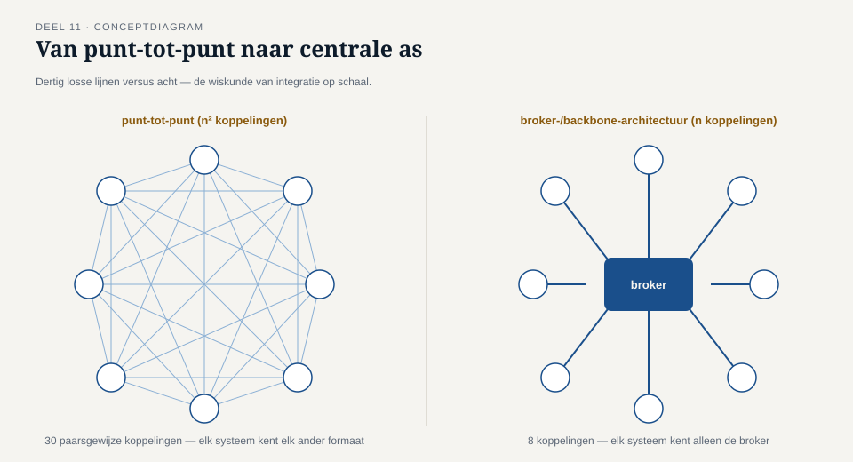
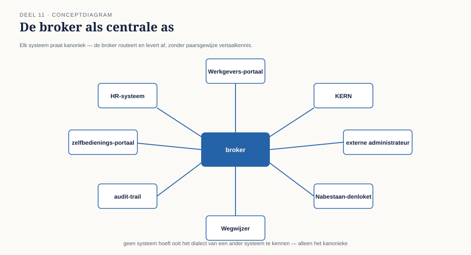

Deel 11 — Integratiearchitectuurstijlen: punt-tot-punt vs. broker vs. event backbone
Reader · Ductus-cursus Enterprise Integration Patterns · niveau 2 (professional) · deel 11 van 22
11.0 Van één keten naar een landschap
Niveau 1 loste één probleem grondig op: de mutatieketen tussen Werkgeversportaal, KERN en de externe pensioenadministrateur. Negen delen, negen patronen, één ontwerp dat de capstone van deel 10 overtuigend doorstond.
Zes weken later kreeg Caspar een heel andere opdracht. Het Programma Mutatieplatform ging van start: een programma dat niet één koppeling herbouwt, maar het volledige applicatielandschap van Meridiaan herstructureert rond een gemeenschappelijk mutatiemechanisme. KERN, het Werkgeversportaal, het Nabestaandenloket, de Wegwijzer, twee externe pensioenadministrateurs (de tweede vanwege de eerdere deelfusie) en, naar verwachting, binnen twee jaar nog vier of vijf systemen — allemaal moeten ze mutaties kunnen versturen, ontvangen, of allebei.
Caspars eerste ontwerp herhaalde, systeem voor systeem, het patroon uit niveau 1: voor elk paar systemen een eigen kanaal, een eigen router waar nodig, een eigen translator waar nodig. Bij acht systemen bleek dit al twintig tot dertig afzonderlijke punt-tot-puntkoppelingen te vergen — en dat aantal groeit kwadratisch met elk nieuw systeem. Het architectuurboard, dat de eerste versie van dit ontwerp zag, stelde een vraag die niveau 1 nooit had hoeven beantwoorden: is de vorm die op één keten werkte, ook de juiste vorm op landschapsschaal?

Dit deel behandelt drie architectuurstijlen op landschapsniveau, en wanneer welke past — niet als vervanging van de patronen uit niveau 1 (die blijven onverkort gelden binnen elke individuele koppeling), maar als een laag erboven: hoe die koppelingen zich tot elkaar verhouden.
11.1 Punt-tot-punt op schaal: waar het breekt
Punt-tot-punt-architectuur op landschapsniveau betekent: elk paar systemen dat met elkaar moet communiceren, krijgt een eigen, specifiek voor dat paar ontworpen koppeling — precies wat niveau 1 deed voor Werkgeversportaal-KERN en KERN-externe administrateur.
Dit werkt uitstekend bij een klein aantal systemen, en heeft een reëel voordeel: elke koppeling kan optimaal worden afgestemd op de specifieke behoeften van dat ene paar, zonder concessies aan een gedeelde infrastructuur. Het probleem ontstaat bij groei, en heeft een precieze wiskundige vorm: bij n systemen die allemaal met elkaar kunnen moeten communiceren, groeit het aantal mogelijke koppelingen naar n(n-1)/2. Bij vier systemen zijn dat zes koppelingen — beheersbaar. Bij acht systemen zijn dat achtentwintig. Bij vijftien systemen, waar Meridiaan over twee jaar naar verwacht te groeien, zijn dat honderdvijf.
Dit is niet alleen een beheerslast. Elke nieuwe koppeling introduceert opnieuw alle ontwerpvragen uit niveau 1 — welke leveringsgarantie, welke idempotentiestrategie, welke foutafhandeling — en zonder een gedeeld kader beantwoordt elk koppelingspaar die vragen mogelijk anders. Bij Meridiaan bleek dit al bij de derde koppeling: de idempotentiestrategie tussen KERN en de eerste externe administrateur verschilde onbedoeld van die tussen KERN en het Nabestaandenloket, simpelweg omdat twee verschillende ontwikkelaars, op verschillende momenten, dezelfde vraag opnieuw en anders hadden beantwoord.
Kernzin 10 van de cursus: punt-tot-punt is geen architectuurfout — het is een architectuurstijl die kwadratisch duur wordt, en de vraag is niet óf dat gebeurt maar bij welk aantal systemen het onhoudbaar wordt voor jouw landschap.
11.2 De broker-architectuur
Een message broker (of, breder, een integratielaag die als centrale tussenpartij fungeert) vervangt de n(n-1)/2 directe koppelingen door n koppelingen: elk systeem praat alleen met de broker, nooit rechtstreeks met een ander systeem. De broker routeert, transformeert waar nodig, en levert af bij de juiste bestemming(en).
Dit lost het kwadratische probleem rechtstreeks op — bij vijftien systemen zijn dat nog steeds maar vijftien koppelingen, niet honderdvijf. Het brengt echter een eigen afweging met zich mee die vaak wordt onderschat:
De broker wordt een gedeelde afhankelijkheid voor het hele landschap. Waar bij punt-tot-punt een storing in één koppeling alleen dat ene paar systemen raakt, raakt een storing in de broker in potentie alles. Dit vraagt een investering in de betrouwbaarheid van de broker zelf die bij punt-tot-punt niet nodig was — precies de guaranteed-delivery-vraag uit deel 8, nu toegepast op infrastructuurniveau in plaats van op een enkel kanaal.
De broker moet de vertaalkennis van élk aangesloten systeem bevatten, of die kennis moet elders zitten. Dit is een herhaling van het probleem uit deel 5 (waarom niet in KERN), nu op een hoger niveau: als de broker zelf alle transformaties tussen alle systeemparen kent, groeit de broker met precies dezelfde kwadratische complexiteit die punt-tot-punt had — alleen nu geconcentreerd in één component in plaats van verspreid. De oplossing is hetzelfde principe als in deel 5: elk systeem communiceert met de broker in één, gestandaardiseerd kanoniek formaat (vergelijk de normalizer uit deel 5), en de broker hoeft dan alleen dat ene kanonieke formaat te kennen, niet elk paarsgewijs formaat.

11.3 De event backbone
Een event backbone (soms event bus, of een event-streaming-platform genoemd — de technologiekeuze hoort in de Toolbijlage) lijkt qua topologie op een broker — ook hier is er één centrale as in plaats van n(n-1)/2 directe lijnen — maar verschilt fundamenteel in communicatiestijl: waar een broker doorgaans zowel command- als event-verkeer faciliteert met gerichte routering naar specifieke bestemmingen, is een event backbone primair gebouwd rond publish-subscribe op events (deel 2 en 6), met als extra eigenschap dat gebeurtenissen vaak voor langere tijd, of zelfs onbeperkt, bewaard blijven.
Deze bewaareigenschap is het belangrijkste verschil met een traditionele broker, en beantwoordt direct een probleem uit deel 6: bij een gewone publish-subscribe-implementatie was een laat aangesloten abonnee (de rapportagetabel die een week miste) een structureel risico, tenzij expliciet een inhaalmechanisme werd gebouwd. Een event backbone bouwt dat inhaalmechanisme in als kernfunctionaliteit: nieuwe abonnees kunnen, binnen de bewaartermijn, de volledige historie van gebeurtenissen "afspelen" alsof ze er van het begin af aan bij waren.
Dit maakt een event backbone bijzonder geschikt voor landschappen waar, zoals bij Meridiaan te verwachten is, regelmatig nieuwe systemen worden aangesloten die interesse hebben in historische gebeurtenissen — bijvoorbeeld een toekomstige rapportagetool die met terugwerkende kracht trends wil analyseren. De prijs is een zwaardere infrastructuur (bewaring van potentieel miljoenen gebeurtenissen vraagt andere opslag- en doorzoekmechanismen dan een kortstondige wachtrij) en een denkwijze die dichter bij niveau 3 (event sourcing, deel 24) ligt dan bij de eenvoudige messaging van niveau 1.
Vuistregel: kies een broker wanneer het landschap vooral gerichte, punt-specifieke communicatie nodig heeft (commands, gerichte queries); kies een event backbone wanneer het landschap vooral feiten moet verspreiden die voor meerdere, ook toekomstige, partijen relevant zijn en historisch doorzoekbaar moeten blijven.
11.4 Geen zuivere keuze: een gelaagd landschap
Bij Meridiaan is, na overleg met het architectuurboard, niet gekozen voor één zuivere stijl maar voor een gelaagde combinatie — en dat is in de praktijk vaker regel dan uitzondering:
Point-to-point blijft bestaan voor koppelingen met een klein, stabiel aantal deelnemers en strikt gerichte communicatie, zoals de statusopvraging uit deel 3 tussen het Werkgeversportaal en KERN specifiek. Hier weegt de overhead van een centrale as niet op tegen het voordeel, omdat er structureel maar twee partijen zijn.
Een broker verzorgt command-gedreven verkeer tussen de kernsystemen: mutatieopdrachten die één verantwoordelijke uitvoerder hebben, zoals de mutatiestroom naar KERN.
Een event backbone verzorgt de verspreiding van feiten die voor een groeiend aantal, deels nog onbekende partijen relevant zijn — precies het mutatie-gebeurd-kanaal uit deel 2, dat bij nader inzien altijd al de eigenschappen van een event backbone had, alleen zonder de bewaartermijn die deel 6's incident had voorkomen.
Deze gelaagdheid is geen compromis uit onvermogen om te kiezen — het is een erkenning dat verschillende soorten verkeer verschillende architectuurstijlen verdienen, net zoals binnen één koppeling al verschillende kanalen verschillende typen (command/event/document, deel 3) verdienden.
Samenvatting van deel 11
- Punt-tot-punt-architectuur groeit kwadratisch (n(n-1)/2) met het aantal systemen en wordt bij landschapsschaal onhoudbaar, niet alleen qua beheer maar ook qua consistentie van ontwerpkeuzes.
- Een broker vervangt dat door n koppelingen naar een centrale as, met als eigen afweging: een gedeelde infrastructurele afhankelijkheid, en de noodzaak van een kanoniek formaat om te voorkomen dat de broker zelf kwadratisch complex wordt.
- Een event backbone lijkt topologisch op een broker maar is primair gebouwd rond publish-subscribe met langdurige bewaring, wat het probleem van deel 6 (laat aangesloten abonnees) structureel oplost.
- In de praktijk combineren landschappen doorgaans alle drie de stijlen, gekozen per soort verkeer — niet als compromis, maar als bewuste erkenning dat command-, event- en gerichte communicatie verschillende architectuurvormen verdienen.
Vooruitblik
Deel 12 verdiept de eerste patroonfamilie van niveau 1 (routing, deel 4) naar landschapsschaal: de dynamic router, de recipient list, en de splitter/aggregator — nodig zodra een bericht niet naar één vaste bestemming maar naar een variabele, soms samengestelde verzameling bestemmingen moet.